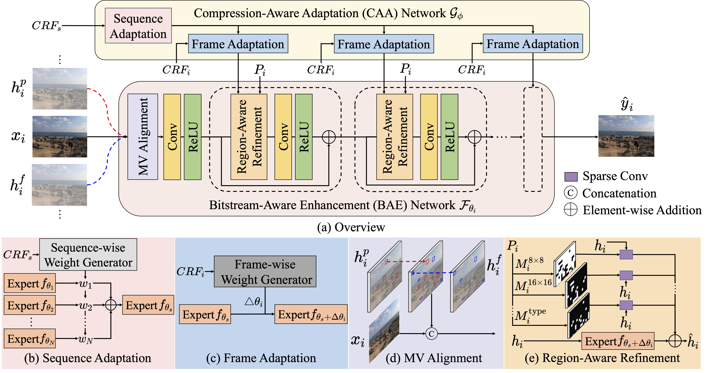

Motivation

We observe that standard video codecs (e.g., H.264) provide rich codec information such as Constant Rate Factor (CRF), motion vectors, and partition maps. CRF reflects hierarchical quality adjustment at both the sequence and frame levels, allowing our model to dynamically adjust parameters for inputs of different compression levels. Partition maps indicate spatial complexity, enabling region-aware refinement, while motion vectors provide temporal alignment cues with minimal overhead. By leveraging the codec information, the enhancement framework is able to flexibly enhance videos across compression levels, support downstream tasks, and maintain computational efficiency.
Framework
As shown above, the proposed method comprises a compression-aware adaption (CAA) network and a bitstream-aware enhancement (BAE). The CAA network employs a hierarchical compression adaptation mechanism to estimate parameters for the frame-adaptive BAE network, which then aggregates intra-frame information and performs region-aware refinement to enhance the input compressed frame.